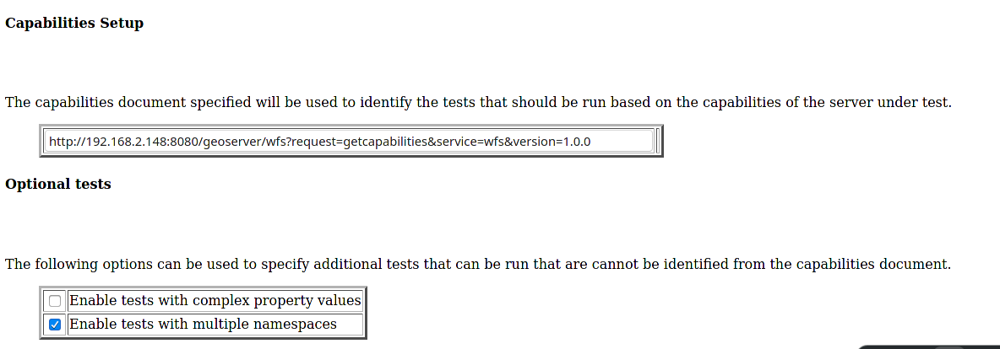
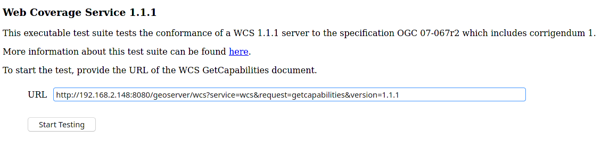
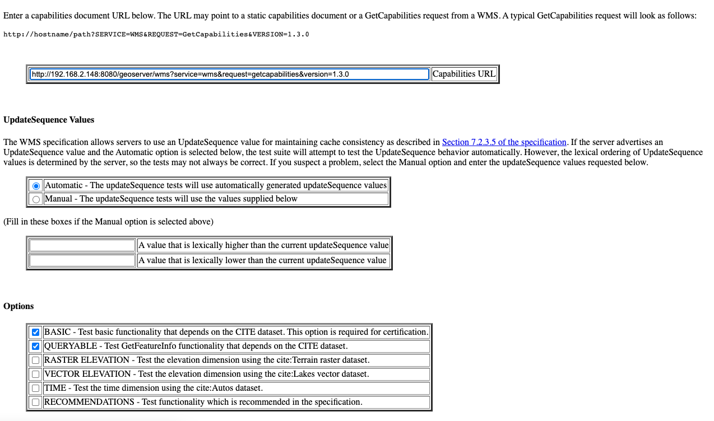

Cite Test Guide¶
A step by step guide to the GeoServer Compliance Interoperability Test Engine (CITE).
Contents
Check out CITE suite tests¶
Note
The CITE suite tests are available at Open Geospatial Consortium.
Requirements:¶
Teamengine Web Application, with a set of CITE suite tests.
make
CITE automation tests with docker¶
How to run the CITE Test suites with docker.
Requirements:¶
Running the tests requires a linux system with docker, docker-compose, and git installed on it.
Note
The CITE tools are available in the build/cite folder of the GeoServer Git repository:
Steps:¶
Set-up the environment.¶
Clone the repository.
git clone https://github.com/geoserver/geoserver.gitGo to cite directory.
cd geoserver/build/citeInside you will find a structure, like below, with a list of directories which contains the name of the suites to run.
cite |-- forms |-- geoserver |-- run-test.sh |-- wcs10 |-- wcs11 |-- wfs10 |-- wms11 |-- wms13 |-- wfs11 |-- interactive |-- logs |-- docker-compose.yml |-- postgres |-- README.md `-- Makefile
Running the suite tests.¶
There are 2 ways to run the suites. One is running with
makethat will automate all the commands, and the second one is running the test through WebUI:
Running it through
Makefile:
run
makein the console, it will give you the list of commands to run.makethe output will like this:
clean: $(suite) Will Clean the Environment of previous runs. build: $(suite) Will Build the GeoServer Docker Image for the Environment. test: $(suite) Will running the Suite test with teamengine. webUI: $(suite) Will running the Suite test with teamengine.Choose which test to run, this is an example:
Warning
The first Docker build may take a long time.
suite=wcs10Note
- Valid values for the suite parameter are:
wcs10
wcs11
wfs10
wfs11
wms11
wms13
Choose which GeoServer war file to test by setting the
war_urlenvironment variable inside theMakefile, ex:war_url = "https://build.geoserver.org/geoserver/main/geoserver-main-latest-war.zip"Note
if you don’t want to do it inside the
Makefileyou have the option of adding the variable in the command when you build the docker images.
To clean the local environment.
make cleanTo build the geoserver docker image locally.
make build suite=<suite-name>Alternative, with the
war_urlvariable include:make build suite=<suite-name> war_url=<url-or-the-geoserver-war-file-desired>To run the suite test.
make test suite=<suite-name>To run the full automate workflow.
make clean build test suite=<suite-name>
Run CITE Test Suites in local pc¶
Note
I assume that you have a standalone geoserver running.
Important
Details to consider when you are running the tests:
The Default username/password for the teamengine webUI are teamengine/teamengine.
the default url for the teamengine webUI is http://localhost:8888/teamengine/
The output of the old suite tests might not appear in the Result page. So you should click on the link below detailed old test report, to get the full report. Ex.
Since you are running teamengine inside a container, the localhost in the url of geoserver for the tests can’t be used, for that, get the ip of host where the geoserver is running. You will use it later.
after you log in to teamengine webUI you have to create a session.
to run the tests you have to choose which one you want, and then click on Start a new test session. This is an example:
Requirements:¶
GeoServer running.
PostgreSQL with PostGIS extension installed. (only for the WFS Tests Suites)
Teamengine Running in docker container.
Clone the repository:
git clone https://github.com/geoserver/geoserver.git
Change directory to the
citecd geoserver/build/citeCheck the commands available:
Run
maketo check:
make
you should get an output as following:
clean: $(suite) Will Clean the Environment of previous runs. build: $(suite) Will Build the GeoServer Docker Image for the Environment. test: $(suite) Will running the Suite test with teamengine. webUI: $(suite) Will running the Suite test with teamengine.
Run WFS 1.0 tests¶
Important
Running WFS 1.0 tests require PostgreSQL with PostGIS extension installed in the system.
Requirements:¶
GeoServer running
teamengine
PostgreSQL
PostGIS
Prepare the environment:
login to postgresql and create a user named “cite”.
createuser cite;
Create a database named “cite”, owned by the “cite” user:
createdb cite own by cite;
enter to the database and enable the postgis extension:
create extension postgis;
Change directory to the citewfs-1.0 data directory and execute the script cite_data_postgis2.sql:
cd <path of geoserver repository> psql -U cite cite < build/cite/wfs10/citewfs-1.0/cite_data_postgis2.sqlStart GeoServer with the citewfs-1.0 data directory. Example:
Important
If the postgresql server is not in the same host of the geoserver, you have to change the <entry key=”host”>localhost</entry> in the datastore.xml file, located inside each workspace directory. ex.
Note
<path of geoserver repository>/build/cite/wfs10/citewfs-1.0/workspaces/cgf/cgf/datastore.xml
cd <root of geoserver install> export GEOSERVER_DATA_DIR=<path of geoserver repository>/build/cite/wfs10/citewfs-1.0 ./bin/startup.sh
Start the test:
make webUI
Go to the browser and open the teamengine webUI.
click on the Sign in button and enter the user and password.
after creating the session, and choosing the test, enter the following parameters:
Capabilities URLhttp://<ip-of-the-geoserver>:8080/geoserver/wfs?request=getcapabilities&service=wfs&version=1.0.0
Enable tests with multiple namespacestests included
Run WFS 1.1 tests¶
Important
Running WFS 1.1 tests requires PostgreSQL with PostGIS extension installed in the system.
Requirements:¶
GeoServer
teamengine
Posgresql
PostGIS
Prepare the environment:
login to postgresql and create a user named “cite”.
createuser cite;
Create a database named “cite”, owned by the “cite” user:
createdb cite own by cite;
enter to the database and enable the postgis extension:
create extension postgis;
Change directory to the citewfs-1.1 data directory and execute the script dataset-sf0-postgis2.sql:
cd <path of geoserver repository> psql -U cite cite < build/cite/wfs11/citewfs-1.1/dataset-sf0-postgis2.sqlStart GeoServer with the citewfs-1.1 data directory. Example:
Important
If the postgresql server is not in the same host of the geoserver, you have to change the <entry key=”host”>localhost</entry> in the datastore.xml file, located inside each workspace directory. ex.
Note
<path of geoserver repository>/build/cite/wfs11/citewfs-1.1/workspaces/cgf/cgf/datastore.xml
cd <path of geoserver install> export GEOSERVER_DATA_DIR=<path of geoserver repository>/build/cite/wfs11/citewfs-1.1 ./bin/startup.sh
Start the test:
make webUI
Go to the browser and open the teamengine webUI.
click on the Sign in button and enter the user and password.
after creating the session, and choosing the test, enter the following parameters:
Capabilities URLhttp://<ip-of-the-geoserver>:8080/geoserver/wfs?service=wfs&request=getcapabilities&version=1.1.0Supported Conformance Classes:Ensure
WFS-Transactionis checkedEnsure
WFS-Lockingis checkedEnsure
WFS-Xlinkis unchecked
GML Simple Features:SF-0
Run WMS 1.1 tests¶
Prepare the environment:
Start GeoServer with the citewms-1.1 data directory. Example:
cd <root of geoserver install> export GEOSERVER_DATA_DIR=<path of geoserver repository>/build/cite/wms11/citewms-1.1 ./bin/startup.sh
Start the test:
make webUI
Go to the browser and open the teamengine webUI.
click on the Sign in button and enter the user and password.
after creating the session, and choosing the test, enter the following parameters:
Capabilities URLhttp://<ip-of-the-geoserver>:8080/geoserver/wms?service=wms&request=getcapabilities&version=1.1.1
UpdateSequence Values:Ensure
Automaticis selected“2” for
value that is lexically higher“0” for
value that is lexically lower
Certification Profile:QUERYABLEOptional Tests:Ensure
Recommendation Supportis checkedEnsure
GML FeatureInfois checkedEnsure
Fees and Access Constraintsis checkedFor
BoundingBox ConstraintsensureEitheris selected
Click
OK
Run WCS 1.0 tests¶
Prepare the environment:
Start GeoServer with the citewcs-1.0 data directory. Example:
cd <root of geoserver install> export GEOSERVER_DATA_DIR=<path of geoserver repository>/build/cite/wcs10/citewcs-1.0 ./bin/startup.sh
Start the test:
make webUI
Go to the browser and open the teamengine webUI.
click on the Sign in button and enter the user and password.
after creating the session, and choosing the test, enter the following parameters:
Capabilities URL:http://<ip-of-the-geoserver>:8080/geoserver/wcs?service=wcs&request=getcapabilities&version=1.0.0
MIME Header Setup: “image/tiff”Update Sequence Values:“2” for
value that is lexically higher“0” for
value that is lexically lower
Grid Resolutions:“0.1” for
RESX“0.1” for
RESY
Options:Ensure
Verify that the server supports XML encodingis checkedEnsure
Verify that the server supports range set axisis checked
Schemas:Ensure that
The server implements the original schemas from the WCS 1.0.0 specification (OGC 03-065is selected
Click
OK
Run WCS 1.1 tests¶
Prepare the environment:
Start GeoServer with the citewcs-1.1 data directory. Example:
cd <root of geoserver install> export GEOSERVER_DATA_DIR=<root of geoserver sources>/build/cite/wcs11/citewcs-1.1 ./bin/startup.sh
Start the test:
make webUI
Go to the browser and open the teamengine webUI.
click on the Sign in button and enter the user and password.
after creating the session, and choosing the test, enter the following parameters:
Capabilities URL:http://<ip-of-the-geoserver>:8080/geoserver/wcs
Click
Next
Run WMS 1.3 tests¶
Prepare the environment:
Start GeoServer with the citewcs-1.3 data directory. Example:
cd <root of geoserver install> export GEOSERVER_DATA_DIR=<root of geoserver sources>/build/cite/wms13/citewms-1.3 ./bin/startup.sh
Start the test:
make webUI
Go to the browser and open the teamengine webUI.
click on the Sign in button and enter the user and password.
after creating the session, and choosing the test, enter the following parameters:
Capabilities URL:http://<ip-of-the-geoserver>:8080/geoserver/wms?service=wms&request=getcapabilities&version=1.3.0
UpdateSequence Values:Automaticchecked
Options:Ensure
BASICis checkedEnsure
QUERYABLEis checked
Click
OK